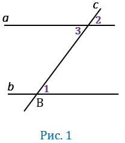

Теорема
Если две параллельные прямые пересечены секущей, то соответственные углы равны.

Доказательство
Пусть параллельные прямые а и b пересечены секущей с. Докажем, что соответственные углы, 1 и 2 равны. Так как a∥b, то накрест лежащие углы 1 и 3 равны. Углы 2 и 3 равны как вертикальные. Из равенств ∠1=∠3 и ∠2=∠3 следует, что ∠1=∠2. Теорема доказана.